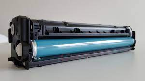
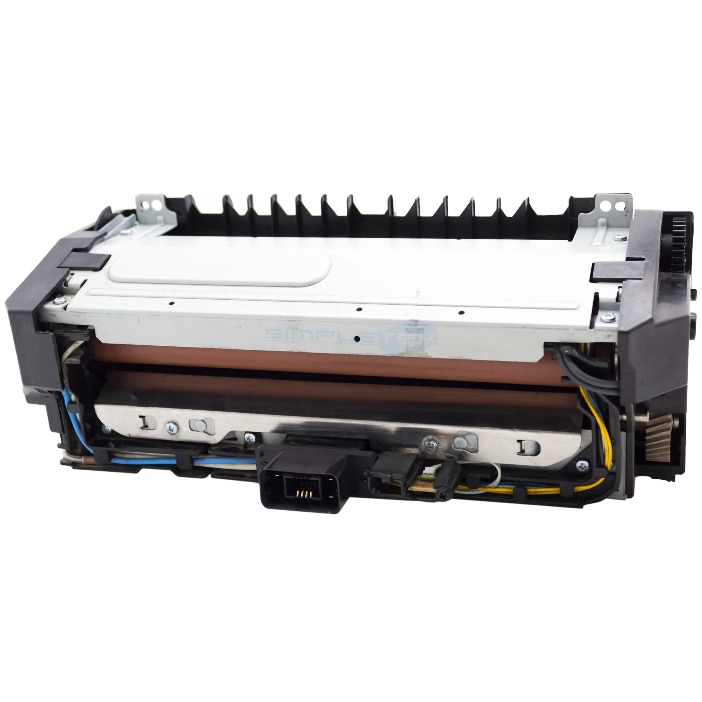

| MANUTENZIONE TAMBURI: | MANUTENZIONE FORNI: |
|---|---|
smontaggio e pulizia del tamburo,dal toner in eccesso,sostituzione dei pezzi principali e riassemblaggio |
smontaggio e sostituzione di pezzi usati e/o rovinati. Procedura più complessa rispetto a quella per i tamburi a causa della presenza di molteplici parte delicate |
|  |  |
|
flutter |
programmazione in linguaggio dart creato da google, con lo scopo di sostituire javascript, per la creazione di applicazioni di vario tipo